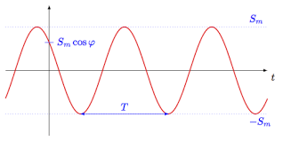
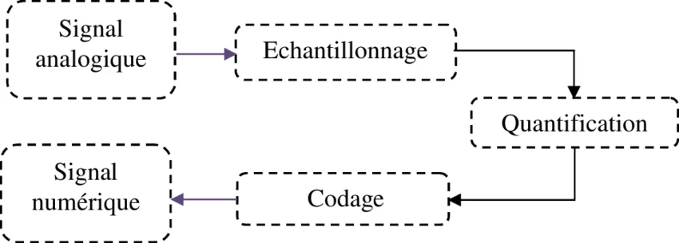
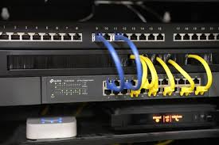

Bloc de Compétences 2 // Niveau 1
Connecter les entreprises et les usagers
Démarche réflexive sur l'analyse physique des signaux, le déploiement des supports de transmission et la mise en œuvre de la téléphonie IP.
AC12.01 // Théorie du Signal
Mesurer, analyser et commenter les signaux
- Ce que j'ai fait : J'ai branché des générateurs de signaux à des oscilloscopes pour capturer, observer et extraire les grandeurs physiques de diverses ondes.
- Pourquoi je l'ai fait : Pour confronter les concepts mathématiques abstraits à la réalité physique des signaux électriques qui transportent la donnée.
- Comment je l'ai fait : En mobilisant les formules du module R1.13 (Mathématiques du signal) afin de calculer précisément des périodes, fréquences et amplitudes crête à crête.
- Mes difficultés : Régler correctement la synchronisation (Trigger) de l'oscilloscope sur des signaux bruités pour stabiliser l'affichage à l'écran.
- Ce que j'en ai appris : Qu'aucun signal réel n'est parfait et que la distorsion physique impacte directement la qualité de la liaison informatique.
- Ce que je ferais autrement : Prendre des notes systématiques et rigoureuses des échelles de l'appareil (Volts/Div) pour accélérer la rédaction du compte-rendu de TP.
Trace Pertinente

[Capture Écran Courbe Oscilloscope]
AC12.02 // Transmissions
Caractériser des systèmes de transmissions élémentaires
- Ce que j'ai fait : J'ai étudié les architectures de chaînes de transmission (modulation, numérisation) et analysé l'impact de l'atténuation sur la fibre optique et le cuivre.
- Pourquoi je l'ai fait : Pour assimiler le fonctionnement mathématique et physique du transport binaire de l'information sur de longues distances.
- Comment je l'ai fait : Lors de la SAÉ 1.03, en m'appuyant sur les modules théoriques de numérisation (R2.06) et en simulant des comportements de canaux bruités.
- Mes difficultés : Comprendre et appliquer les calculs de puissance en Décibels (dB) appliqués aux pertes en ligne de la fibre optique.
- Ce que j'en ai appris : Le choix d'un média physique (cuivre vs fibre) est un compromis strict dicté par des contraintes de distance, de bande passante et d'atténuation.
- Ce que je ferais autrement : Multiplier les exercices de modélisation sur logiciel (Scilab/Python) pour mieux visualiser l'influence du bruit thermique.
Trace Pertinente

[Schéma Chaîne de Transmission / Graphique]
AC12.03 // Infrastructures Physiques
Déployer des supports de transmission
- Ce que j'ai fait : J'ai réalisé des opérations de dénudage, câblé des brins RJ45, effectué des raccordements sur des panneaux de brassage et testé la continuité.
- Pourquoi je l'ai fait : Pour maîtriser la couche 1 (Physique) du modèle OSI et garantir une infrastructure de câblage saine pour les couches supérieures.
- Comment je l'ai fait : Lors d'ateliers de TP pratiques, équipé de pinces à sertir, de dénudeurs de câbles torsadés et de testeurs de continuité de paires.
- Mes difficultés : Respecter scrupuleusement l'ordre exact des couleurs de la norme T568B sans croiser ou fragiliser les fils de cuivre lors de l'insertion dans la fiche.
- Ce que j'en ai appris : Un réseau ultra-performant côté logiciel s'effondre instantanément si le déploiement physique souffre d'un mauvais contact.
- Ce que je ferais autrement : Tester systématiquement le câble de manière isolée avant de l'intégrer définitivement dans la goulotte ou la baie de brassage.
Trace Pertinente

[Photo Câble Serti / Baie de Brassage]
AC12.04 // Téléphonie sur IP
Connecter les systèmes de ToIP
- Ce que j'ai fait : J'ai raccordé des téléphones IP au réseau local, configuré des extensions de base et validé l'établissement de communications vocales.
- Pourquoi je l'ai fait : Pour appréhender l'intégration des services de voix convergés sur une infrastructure de données IP classique.
- Comment je l'ai fait : En exploitant les TP dédiés à la téléphonie, en attribuant dynamiquement des profils via DHCP et en analysant l'enregistrement de terminaux.
- Mes difficultés : Assurer la priorisation des flux (QoS) dans les commutateurs pour éviter les coupures ou dégradations de la voix lors des appels.
- Ce que j'en ai appris : Que la voix sur IP requiert une stabilité réseau accrue par rapport au simple transfert de fichiers Web.
- Ce que je ferais autrement : Rédiger un schéma d'architecture ToIP complet intégrant les numéros de ports logiques avant de lancer les configurations.
Trace Pertinente
[Topologie VoIP / Capture Téléphone IP]
AC12.05 // Communication Professionnelle
Communiquer avec un tiers et adapter son discours
- Ce que j'ai fait : J'ai participé à des simulations de présentations techniques, rédigé des mails formels et présenté l'état d'avancement de mes projets.
- Pourquoi je l'ai fait : Pour être capable d'interagir efficacement avec un client ou un collègue en adaptant mon vocabulaire technique selon son profil.
- Comment je l'ai fait : En m'appuyant sur les modules d'expression-communication et d'anglais technique pour structurer des argumentations professionnelles.
- Mes difficultés : Réussir à vulgariser instantanément des acronymes réseaux complexes (ex : NAT, DHCP, VLAN) face à un interlocuteur non technique.
- Ce que j'en ai appris : Un excellent technicien doit aussi être un bon communicant ; savoir expliquer clairement une solution est la clé de la relation client.
- Ce que je ferais autrement : Préparer systématiquement un glossaire simplifié ou des schémas visuels d'appui avant d'entamer une réunion de restitution.